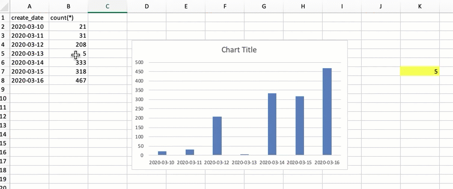

类别：行为型设计模式
目的：在对象自身状态发生变化时，立刻通知需要知道这个新状态的对象（们）
完整代码参考：https://1drv.ms/u/s!AquRvPzqx59Ri3dNicP8EQjwPUw_?e=klJYWD
典型场景
表格中的数字由5改为500后，这张表格对应的柱状图和链接的数字（黄色部分）同时立即发生对等改变（Excel的特性）

下面使用表格、图表、链接数字指代上面图片的左、中、右部分
基本事实：
- 表格数据发生变化时，需要立刻通知图表和链接的数字进行对应的变更
硬编码
表格类
public class Table {
private Integer data;
public Integer getData() {
return data;
}
public void setData(Integer data) {
this.data = data;
}
}
注意这个表格类的setData方法是在改变这个表格的数据
图表类
public class Chart {
public void update(Integer newData) {
System.out.println("Chart: new value is : " + newData);
}
}
链接数字类
public class Ceil {
public void update(Integer newData) {
System.out.println("Ceil: new value is : " + newData);
}
}
在调用Table::setData()方法时需要通知图表和链接数字:
- 比较容易想到的方式时在Table中耦合Chart和Ceil
- 然后调用Chart::update(newData)和Ceil::update(newData)进行通知
这样做可以达到通知的目的，但是并不符合面向对象的开闭原则：不利于扩展，这种情况就可以使用观察者模式/中介者模式进行实现了，这里采用观察者模式的代码结构
模式实现
观察者接口设计
public interface Observer {
void update(Integer newData);
}
当被观察者需要通知观察者时，调用update方法即可，这里使用接口是为了将耦合从具体实现优化为耦合一个接口
被观察者通用方法设计
public class Observable {
private List<Observer> observerList = new ArrayList<>();
public void addObserver(Observer observer) {
observerList.add(observer);
}
public void notifyObservers(Integer newData) {
for (var observer : observerList)
observer.update(newData);
}
}
可以看到被观察者可以通过addObserver添加多个观察者，扩展性比较好，符合开闭原则
表格（中的数据)是被观察的对象，通过继承Observable即可拥有注册并通知观察者的能力，代码参考如下：
public class Table extends Observable { // 注意这里，通过继承拥有被观察者通知/添加观察者的能力
private Integer data;
public Integer getData() {
return data;
}
public void setData(Integer data) {
this.data = data;
notifyObservers(data); // 注意这里，对观察者进行了通知
}
}
用法如下
var table = new Table();
var chart = new Chart();
var ceil = new Ceil();
table.addObserver(chart);
table.addObserver(ceil);
table.setData(100);
效果如下
UML
为什么观察者模式更好
- 解偶
- 符合开闭原则，方便扩展
一些注意的点
观察者模式注重状态的传递，而中介者模式注重组件之间的解耦合，虽然解耦合的表象是相似的，但是它们想达到的目的是不相同的。
观察者模式和中介者模式特性条件下实现可以呼唤，上面只是一种代码结构，可以思考如何用观察者模式实现中介者模式
观察者模式的数据传递有推(Push)和拉(Pull)两种模式，具体参考：https://blog.csdn.net/sinat_34093604/article/details/53081130